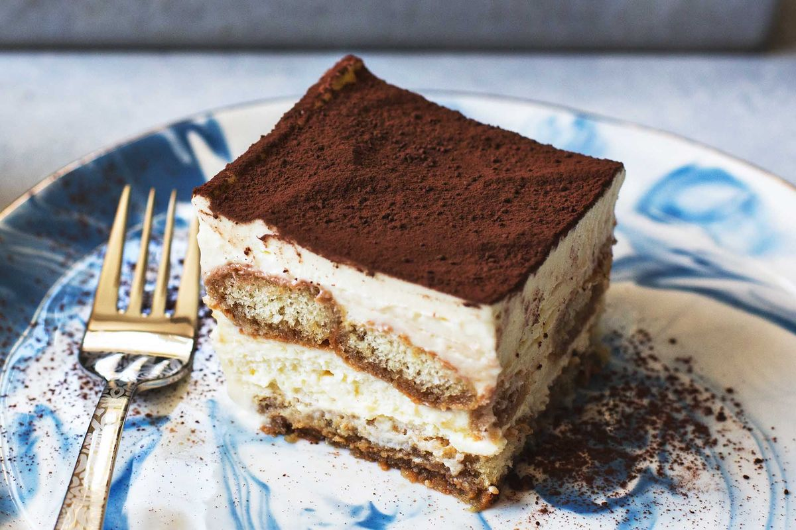

Tiramisu Recipe

Description
This delectable deseret makes everyone happy. Layers of marscapone and esperess dipped lady fingers will delight the kid in all of us
Ingredients
- Eggs
- Marscapone
- Lady Finger Cookies
- Espresso
- Cocoa Powder
- Sugar
Steps
- First you are going to brew a bit of espresso, once it is brewed pour into bowl and let cool to room temperature
- Mix the marscapone with the eggs and sugar. Beat with an electric mixer
- When the espresso is cool, dip the lady finger cookies into it. Put a layer across a glass casserole dish.
- Once a layer is in place, spread a layer of the Marscapone mix over the layer of lady fingers
- Repeat this step until you fill pan to the top
- Top with cocoa powder and allow 2 hours in the fridge before serving
- Bon Appetit